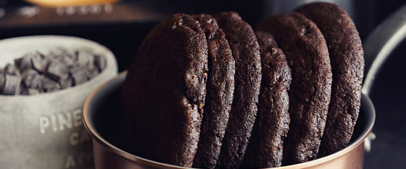

приготовление:
-
170 гр. сливочное масло довести до комнатной температуры.
-
Соединить в одной чаше сухие ингредиенты: 190 гр. муки, 50 гр. какао и 3 гр. соды. В другой чашке соединить 240 гр. сахара и 15 гр. мёда. Если мёд слишком густой, слегка разогреть на водяной бане. Взбить масло миксером. Должна получиться текстура помадки или майонеза. Горячие венчики помогут. Добавить сахарную смесь и хорошо промешать массу миксером, минуты 2-3. Потом разбить в отдельную мисочку два яйца, перемешать до однородности, влить в тесто 65 гр. и снова промешать. После этого всыпать половину сухих ингредиентов. Потому вторую. В конце добавить 100 гр. тёмного шоколада, порубленного на кусочки 5х5 мм. Готовое тесто завернуть в плёнку и убрать в холодильник на 30 минут.
-
Включить духовку на 160 градусов. Через пол часа тесто разделить пополам, одну часть оставить, вторую - обратно в холодильник. Оставшуюся часть разделить на 6 одинаковых, скатать шарики, расплюснуть до толщины в 1 см. и выложить на противень давольно далеко друг от друга, т.к. они сильно растекуться. Выпекать минут 15. После того, как печенья слегка остынут, можно выложить их из противня и выпечь вторую часть теста.
-
Готовые изделия лучше хранить в герметичном контейнере до трёх дней.